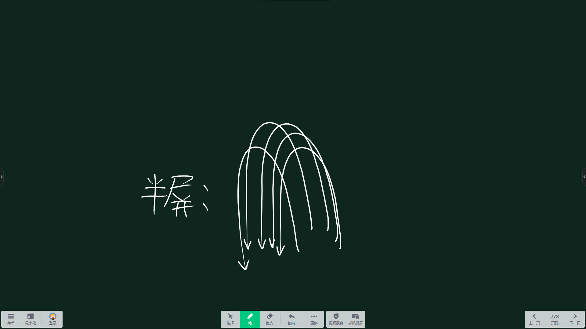

终于！期中考试考完了qwq，这是我们这一学期仅次于期末考试的一次大型考试，虽然一对答案就是“大题错错如急雨，小题错错如私语”，但这都是往事了，总之，期中考试结束了，标志着我们离放假又近了一步。这次放假是放两天，下次估计就只放一天了。但总之，今周末可以真正放两天了awa
整理本周待办事项记录纸时，竟整整掏出了32页纸（不包括纸质邮件和碎片思考等占页数较多的长文），我自己都很不可思议，这也是我为什么要抽出一块来写这个的原因。
包含消息缓冲区9也，言论与时事6页，零碎事项5页，校事汇总、问题、查找资料各2页，物资准备、对话、网站建设、实时、代写、习惯养成各一页。
许多人都觉得MC模组开发太麻烦了，需要构建，打包，才能丢到服务器里运行，而且运行时还不能改代码…
于是我设想了一种模组，他可以动态地加载Python或JavaScript脚本，脚本运行时可直接修改脚本进行调试，同时他提供了网络接口，便于外部程序协调多个MC服务器。
这样岂不是只有一个模组就一劳永逸了，可以随便装卸其他“模组”而不影响游戏运行了——其实与其说是“模组”，不如说是“插件”。因为这样的脚步似乎更符合MC服务端插件的定义。
其实是本周新开计划，但由于每次都做不完，只能攒着日后再做，故叫做“坑”了。但我坚信，再伟大的计划，也总有做完的那一天——“譬如平地，虽覆一篑，进，吾往也。”
受uni-app的启发，我设想了个uni-mc。
虽然mc本身就是跨平台的，但众所周知，模组加载器有很多，像是目前主流的Forge和Fabric。而像WorldEdit这种不仅提供了模组，还提供了服务端插件。
于是我有了个想法：既然开发跨加载器的内容需要为各个加载器进行不同的编码，那么我们能不能只写一次代码，然后通过转换程序去适应不同的环境呢？于是uni-mc的想法就此诞生。
其实还有其他一些坑比如视频、谱面、模组等，为了避免抄袭创意，暂不透露。
没错，就是更新网站、PWM、言论、问题、堆了好几个星期了呢
什么？别告诉我你不知道半屏，希沃一体机五指上滑再下滑！我已经忍不住要告知于众了
2023年11月16日上体育时遇到一个音游人，音游人并不稀奇，但他居然能听出我敲的歌来...（详见言论）